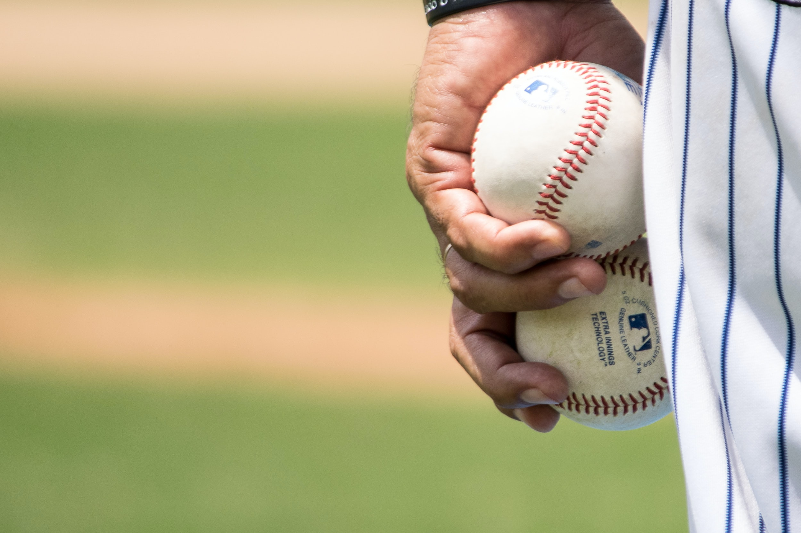
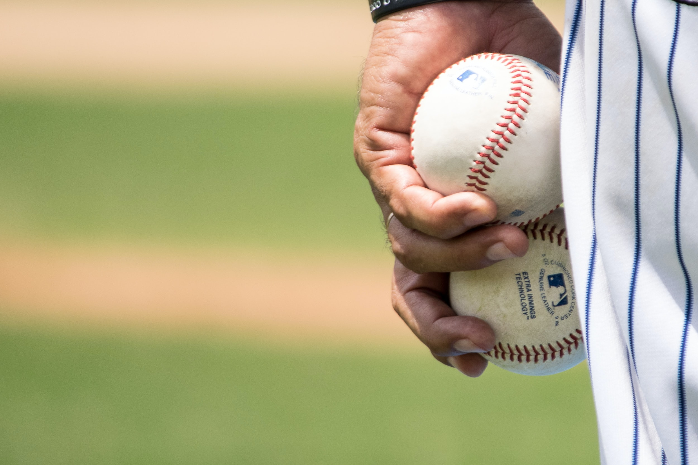

롯데 자이언츠
대한민국의 프로야구단. 연고지는 부산광역시이며, 홈구장은 동래구 사직동에 위치한 사직 야구장이다.
삼성 라이온즈와 함께 롯데 자이언츠는 원년부터 연고지, 팀명, 모기업이 바뀌지 않으며 현재까지 이어져온 유이한 팀이며 실업야구 시절을 포함한다면 리그보다 오랜 역사를 자랑하는 유일한 팀이다. 2020년 5월 6일로 창단 45주년을 맞았다.
팀을 상징하는 노래는 돌아와요 부산항에.

대한민국의 프로야구단. 연고지는 부산광역시이며, 홈구장은 동래구 사직동에 위치한 사직 야구장이다.
삼성 라이온즈와 함께 롯데 자이언츠는 원년부터 연고지, 팀명, 모기업이 바뀌지 않으며 현재까지 이어져온 유이한 팀이며 실업야구 시절을 포함한다면 리그보다 오랜 역사를 자랑하는 유일한 팀이다. 2020년 5월 6일로 창단 45주년을 맞았다.
팀을 상징하는 노래는 돌아와요 부산항에.
